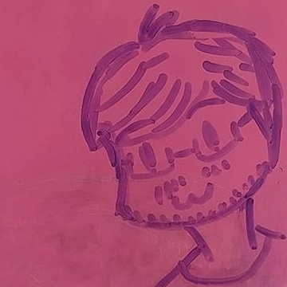

Andrew Marmaduke
Mathematical Sciences, University of Iowa, Iowa City, IA 52241
Mailing Address: 14 MacLean Hall
Office: Seamans Center for the Engineering Arts and Sciences, #1422
About
I'm a Computer Science PhD student working in the Computational Logic Center.
My advisor is Dr. Aaron Stump.
I work with Aaron and others on Cedille.
I am interested in programming language theory, logic, and the formalization of mathematics.
My current research revolves around how Cedille's unique feature set (dependent intersections, equality of well-scoped untyped terms, and erased function spaces) can be used to capture and construct many of the ideas in other languages (such as large eliminations, induction-induction, induction-recursion, etc).
Conference and Symposium Proceedings
- Quotients by Idempotent Functions in Cedille. Andrew Marmaduke, Christopher Jenkins, Aaron Stump. Trends in Functional Programming (2019) doi
- Zero-Cost Constructor Subtyping. Andrew Marmaduke, Christopher Jenkins, Aaron Stump. To appear in Implementation and Application of Functional Languages (2020) doi (currently inactive)
Unpublished Works
- A Simple Coarse-Grained Model of a Carbon Nanotube Forest Interacting with a Rigid Substrate. Andrew Marmaduke. Master Thesis. The University of Akron (2015)
Tools
- olette. An optimal lambda evaluation toy for graphically exploring reductions one at a time without an oracle to decide matching of fans. Implemented with the help of Macy Schmidt.